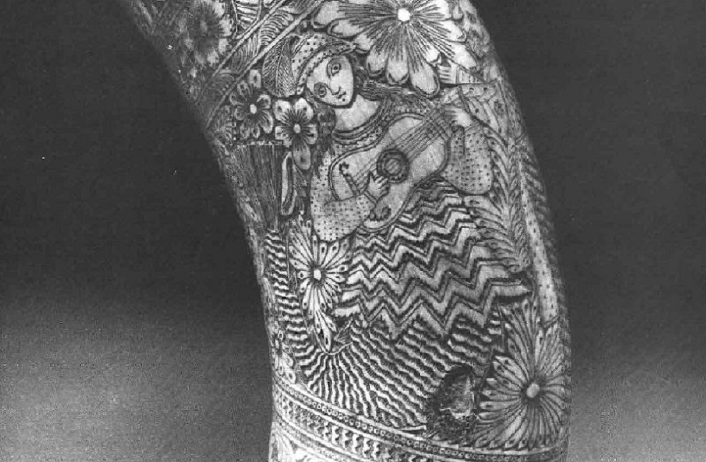

La sirena del cuerno para beber
Apunte 030
Inicio > Blog Bitácora de un músico > Apunte 030
Una sirena con un instrumento de cuerda
Un cuerno para beber, grabado y fechado en 1872, atribuido al valle bajo del Mantaro, en el centro del Perú, presenta la imagen de una sirena que toca un instrumento de cuerda pulsada. La figura ocupa una parte de una superficie profusamente ornamentada, rodeada de flores, motivos geométricos y otros elementos decorativos.
El objeto fue reproducido por Francisco Stastny en Las artes populares del Perú (1981, fig. 157), dentro de su estudio sobre los recipientes de cuerno peruanos del siglo XIX. Su importancia va más allá de la representación de un instrumento musical. Documenta la persistencia y transformación de un motivo visual que había circulado ampliamente por los Andes coloniales y que seguía presente en el arte popular del período republicano.
El instrumento que sostiene la sirena se asemeja a un pequeño cordófono de la familia de las guitarras, con cuerpo de cintura estrecha, mástil y boca de resonancia. El grabado no ofrece detalles suficientes para identificarlo con precisión, particularmente en lo que respecta a la disposición de las cuerdas y la afinación. Por lo tanto, es preferible describirlo como un instrumento similar a una guitarra, en lugar de identificarlo de manera concluyente como una guitarra o un charango.
El cuerno grabado
El recipiente pertenece a un grupo de cuernos para beber profusamente decorados que se produjeron en el Perú durante el siglo XIX.
Stastny describe ejemplares fabricados con cuernos de bovino y ornamentados con figuras humanas, animales, flores, sirenas y diseños entrelazados. Algunos incluyen inscripciones que identifican a sus propietarios. La decoración se realizaba mediante incisiones, trazados de líneas paralelas y la aplicación de pigmentos oscuros para destacar las figuras grabadas.
Según Stastny, varios ejemplares conservados presentaban características estilísticas lo suficientemente similares como para sugerir que eran obra de un mismo artesano, activo alrededor de 1872. Esta atribución permite plantear la posibilidad de un taller común, pero no establece la identidad del fabricante.
La técnica reviste especial importancia. Stastny relaciona estos recipientes de cuerno con las tradiciones de mates grabados de Ayacucho, en las que los artesanos utilizaban contornos incisos, fondos rayados y superficies oscurecidas para producir intrincadas composiciones figurativas.
El cuerno pertenece, por lo tanto, a la historia de los recipientes decorados. Su importancia musical reside en la imagen grabada sobre su superficie.
Las sirenas en la cultura visual andina
La sirena se incorporó a la imaginería andina colonial a través de las tradiciones religiosas, literarias y artísticas europeas. Sus representaciones circularon en imágenes impresas, decoraciones de iglesias, textiles, objetos de metal y recipientes para beber.
En la iconografía europea, la sirena poseía varios significados superpuestos. Asociada con el canto cautivador, la atracción peligrosa y la tentación moral, la figura aparecía bajo diferentes formas, entre ellas la criatura con cuerpo de ave de las tradiciones clásicas y la mujer con cola de pez que se hizo cada vez más familiar en el arte medieval y de comienzos de la Edad Moderna.
La adopción de esta imaginería en los Andes no produjo un sistema simbólico uniforme. Las sirenas aparecieron en la arquitectura colonial y en objetos decorativos, a veces sosteniendo instrumentos musicales como laúdes, vihuelas o guitarras. Su presencia podía conservar asociaciones europeas y, al mismo tiempo, adquirir significados condicionados por las prácticas artísticas y las creencias locales (Gisbert, 1980; Millones & Tomoeda, 2004).
Esta dimensión musical merece especial atención. La sirena no era una simple criatura mitológica representada junto a un instrumento. En varias tradiciones andinas, la relación entre las sirenas y la música se convirtió en un componente significativo de la identidad de la figura.
Instrumentos musicales y seres sobrenaturales
La investigación de Luis Millones y Hiroyasu Tomoeda (2004) ofrece evidencias comparativas especialmente útiles para comprender la relación entre las sirenas y los instrumentos musicales en el sur del Perú.
Trabajando con pintores de Sarhua, Ayacucho, los autores examinaron representaciones de sirenas asociadas con ríos, lagunas y cascadas. Una de las pinturas muestra cinco sirenas que tocan diferentes instrumentos: arpa, guitarra, vihuela, violín y flauta.
Las entrevistas con los artistas documentaron tradiciones orales según las cuales los músicos dejan sus instrumentos cerca de cuerpos de agua habitados por seres sobrenaturales. Se cree que, durante la noche, las sirenas afinan los instrumentos, mejoran su sonido o contribuyen a la adquisición de habilidades musicales.
Estas tradiciones atribuyen a la figura de la sirena una función que va más allá de la representación del entretenimiento musical. El ser sobrenatural queda asociado con la calidad del sonido de un instrumento y las capacidades de su intérprete.
Es necesario respetar la distancia cronológica y geográfica entre estos testimonios y el cuerno del Mantaro de 1872. Los testimonios de Sarhua se publicaron en 2004 y corresponden a una localidad diferente; no permiten demostrar que las mismas creencias estuvieran presentes en el grabado del siglo XIX.
Sin embargo, sí establecen que la asociación entre las sirenas y los instrumentos de cuerda ha adquirido significados musicales específicos en las tradiciones andinas. Esto proporciona un contexto más productivo para examinar el cuerno que una interpretación puramente decorativa.
¿Qué instrumento está representado?
La identificación de instrumentos de cuerda en las imágenes históricas andinas presenta dificultades recurrentes.
Las guitarras europeas, las vihuelas y los cordófonos regionales de menor tamaño comparten varias características morfológicas. Sus representaciones en pinturas, relieves y grabados pueden omitir detalles necesarios para una identificación organológica precisa.
Julio Mendívil (2002) ha examinado la relación entre las evidencias históricas y los relatos sobre los orígenes del charango. Señala que las representaciones de sirenas que sostienen posibles charangos en iglesias coloniales se han utilizado en intentos de establecer una cronología temprana para el instrumento.
Estas evidencias requieren cautela. La identificación de un cordófono representado en una imagen como un charango puede depender de suposiciones sobre el tamaño del cuerpo, las proporciones del mástil o el contexto cultural de la representación, ninguno de los cuales proporciona necesariamente una identificación concluyente.
El grabado del Mantaro plantea el mismo problema. Su figura musical puede identificarse como un cordófono de mástil y cuerda pulsada, pero la imagen conservada no permite establecer su afinación, número de cuerdas o construcción precisa.
Por lo tanto, el objeto documenta la representación de un tipo reconocible de instrumento de cuerda, pero no ofrece evidencias suficientes para una atribución organológica específica.
Esta limitación no disminuye su valor. Las imágenes históricas contribuyen a la reconstrucción de la cultura musical precisamente cuando se distinguen tanto sus posibilidades como sus incertidumbres.
El arte popular después de la independencia
El cuerno también proporciona evidencias de la continuidad de las prácticas artísticas durante la transición del período colonial al Perú republicano.
Su fecha lo sitúa aproximadamente medio siglo después de la independencia peruana. Sin embargo, su ornamentación pertenece a un repertorio visual cuyos elementos ya habían circulado por los Andes durante la época colonial.
La investigación de Stastny demuestra que el arte popular del siglo XIX conservó y transformó motivos asociados con tradiciones artísticas anteriores. Animales, seres fantásticos, diseños florales y figuras humanas continuaron apareciendo en objetos utilitarios y decorativos fabricados para diferentes grupos sociales.
El cuerno grabado ilustra esta persistencia. Su sirena pertenece a un repertorio iconográfico heredado, mientras que su ejecución refleja las técnicas y convenciones de la artesanía regional. Sin embargo, sería engañoso describir la figura simplemente como un vestigio colonial. La supervivencia de una imagen no implica necesariamente la conservación inalterada de su significado anterior.
Lecturas
- Gisbert, Teresa. 1980. Iconografía y mitos indígenas en el arte. La Paz: Editorial Gisbert y Cía.
- Mendívil, Julio. 2002. "La construcción de la historia: el charango en la memoria colectiva mestiza ayacuchana." Revista Musical Chilena 56 (198): 63-78.
- Millones, Luis, and Hiroyasu Tomoeda. 2004. "Las sirenas de Sarhua." Letras 75 (107-108): 15-31.
- Podgorny, Irina. 2022. "Hecho en Perú." Hilario. Artes Letras Oficios, no. 15, Mayo.
- Stastny, Francisco. 1981. Las artes populares del Perú. Lima: EDUBANCO, Fundación del Banco Continental para el Fomento de la Educación y la Cultura.